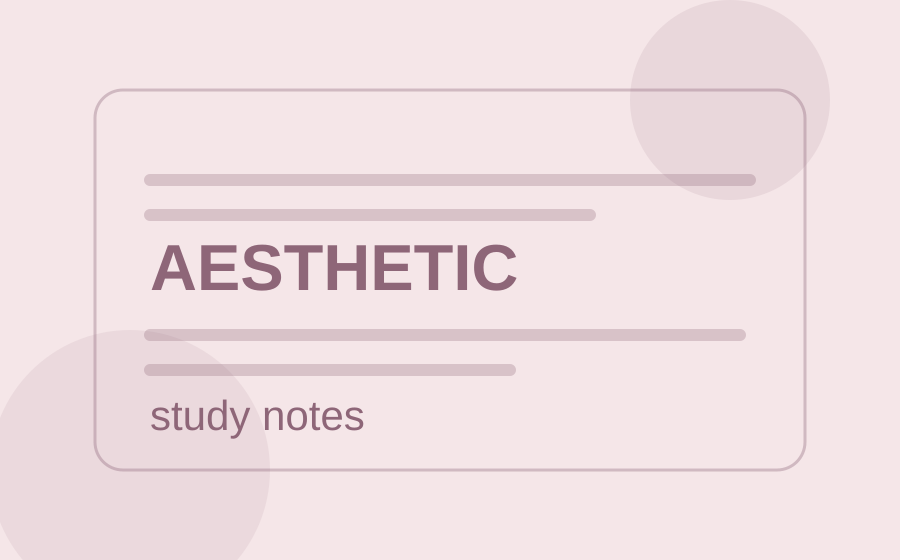

Explorez
Parcourez les styles et leurs aperçus visuels.
Explorez des styles visuels, découvrez leur univers et copiez un prompt prêt à utiliser avec votre outil IA préféré.

Aesthetic notesChoisissez une direction visuelle et laissez votre IA l'appliquer à votre document.
Parcourez les styles et leurs aperçus visuels.
Ouvrez un style pour comprendre son identité graphique.
Copiez son prompt, joignez votre fichier dans votre outil IA et lancez-vous.